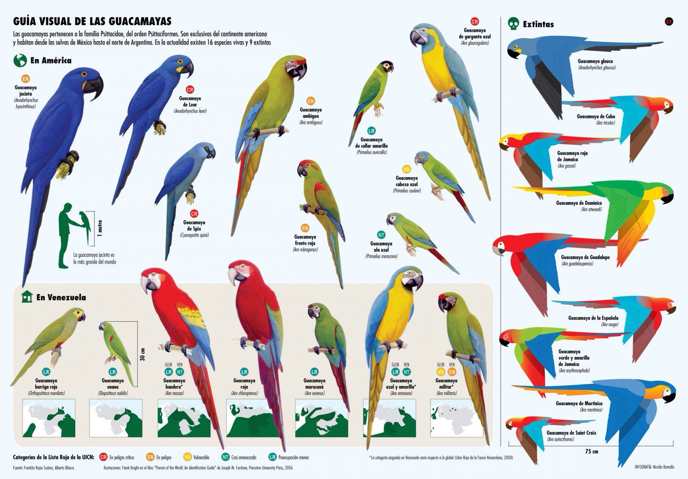

Loros

Caracteristicas de los loros
Los lores, cotorros o pericos (todos son lo mismo) son animales muy sensibles e inteligentes, viven muchos años (los loros grandes pueden llegar hasta los 60!). Requieren muchos cuidados y mantenerlos como se debe requiere mucho compromiso.
Las aves necesitan espacio para volar, recortarles las aves es una crueldad y los puede deprimir. Ademas de espacio, los loros necesita juguetes de madera para que puedan distraerse y jugar. Al ser animales muy inteligentes requieren estimulos para divertirse
Loros de America
- Especie: Psittacidae
- Longevidad: 15-25 años
- Gestacion: 20-25 dias
- Peso promedio: 400gr.
- Habitad: ambientes humedos y mediterraneos
- Dieta: semillas, nueces, frutos, brotes y materias vegetales
Atenciones de los Loros
Los loros necesitan ir al veterinario cada 6 meses, algunas veces los loros se enferman y empiezan a mostrar sintomas hasta que ya es muy tarde. Por eso hay que tener mucho cuidado con ellos.
El baño es muy importante para los loros. Desde un baño de sol para acolorarse un poco (tampoco en exceso), hasta un baño con agua tibia con atomizador o un recipiente pequeño para que no se ahoguen
Los loros mexicanos estan en extincion
Pese a que es legal tener loros, las especies endemicas de Mexico estan prohibidas para su compra-venta. Las multas por su trata van hasta los $50,000 MXN.
No todos los pericos pueden repetir palabras, no son juguetes habladores. Se debe tener muchas consideracion si se desea adoptar la resposabilidad de un loro